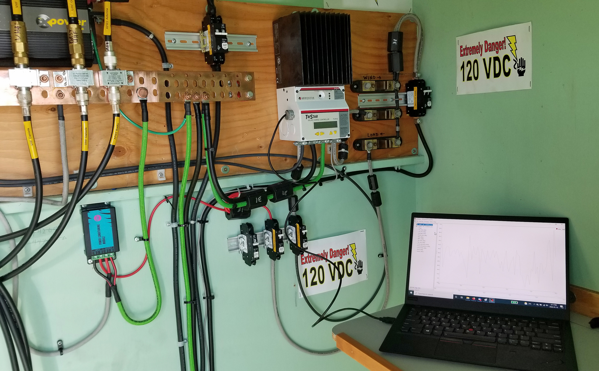

South Forge VE7LGN Solar Charging Analysis
Back to StoriesStory 684
Mon, 2022-02-07 14:57 — VE7FSR

by Myles VE7FSR and Lee VE7FET On January 15, 2022 Myles, VE7FSR snowmobiled up to South Forge Mtn to download the log file from the Morningstar TriStar MPPT solar charge controller.
Myles and Lee were curious how the new solar panel array and "new" batteries were faring so far this winter.
Originally we had planned to have a 48vdc battery plant, but when we undertook the big rebuild project this summer we had to change those plans and use a 12vdc system.
The TriStar MPPT-45 solar charge controller is rated for a 2400W array when using 48vdc, but only 600W when using 12vdc.
This means that our solar panel array (~900W) is over-sized and over the rated capacity of the charge controller.

In full sun, and with a lower battery voltage, it appears that the charge controller is reaching its 45A charge limit and goes into current limiting (and also generates one or more error messages in the log file, see attached).
The good news is that the charge controller still charges, and it hasn't gone kaput so far!
We were worried that without the wind generator (with we discovered had failed when we did the repeater rebuild last summer) we might be short of power, hence the trip up in mid-January to check on things.
We we guessing that if the repeater had survived through the shortest (and probably coldest) days of the winter then things might not be too bad.
Lee: "Looking at the log file, it is good to see "float entered" on most days.
That means that the battery voltage got up to the absorb voltage, and stayed there for the three hour time limit, when it transitioned to float (remember, this charge controller is "dumb" and can't measure battery current, so it relies on a timer for how long to stay at the absorb voltage, before switching to float)." Lee: "Days with 180 minute absorb, followed by lots of float time would have been full-sun days, and the batteries were pretty much fully charged.
Did the bulk charge, hit absorb for 3 hours, then spent the rest of the day on float.
That's great!" Lee: "There are some days where it didn't get in to float, and barely (if at all) got into absorb.
Those were likely days where the panels were iced up and/or it was very cloudy.
There has been pretty good power generation on cloudy days, so I would be betting on ice." Lee: "There are some days where we go for 270 minutes of absorb.
That is because the battery voltage dropped below the other threshold that is set to extend the absorb timer (I can't recall what that setting is right now).
You see this on Oct 28, Nov 18, Jan 1, Jan 10, Jan 15.
On a number of those days, we did enter float, so there was lots of sun, and Vbmax was up over 14V, so the batteries were well charged, that's good to see too." Lee: "Finally, you'll notice that starting Dec 23, things must have been iced up hard.
We had that winter storm at Christmas, and it must have been nasty on South Forge too.
There is a stretch of a week there where it barely hit the absorb voltage.
It was pretty much running on battery that whole week by the looks of it.
There was obviously some charging going on, because there was an overcurrent alarm on Dec 27.
It wasn't until Dec 30 that it started to recover (start getting into Absorb more consistently for a longer time).
It really wasn't until Jan 11 that the batteries were fully recharged, looking at the overnight Vbmin it was <12.2V, so it would want to have a longer absorb time, but it never gets there, until it gets to Jan 11, and it does the full absorb time and then enters float." Lee: "You will also note that it has been stupid cold up there... those are battery temperatures , not ambient temperatures, and you know how long it takes to cool down a mass of lead (and warm it back up).
So, the plant was working pretty hard to try and charge the batteries in those temperatures." Lee: "Overall, the solar power plant would appear to be performing very well, considering the age of those batteries.
I think it gives pause to consider if putting wind up there would be of any real benefit, since the solar seems to be doing the job, so far.
Of course, that may change when we add additional load, but we are also going to put in new batteries too.
So, time will tell." I (Myles) opened the log file in MS-EXCEL and made up some charts to help readers understand what was going on with the solar charging and battery bank on South Forge over the last couple months.
I have also attached the .xls log file to this article in case anyone else wants to have a look at the data.
The first chart is the battery bank voltage (max and min) from October 27, 2021 to January 15, 2022 .
All charts that follow are all for the same date range.
LGN Battery Bank Temp.jpg LGN Battery Bank Voltage.jpg The next chart (see right) is the battery bank temperature (max and min).
As Lee mentioned above, you can see how long it takes to warm up a ton or so of lead!
On my second trip up on January 22 I went into the battery room to check on things and was amazed at how much warmer it was in there, compared to the "radio" side of the building -- which faces southwest!
LGN Daily AH Charge.jpg LGN Daily Wh Charge_0.jpg The next two charts are the Daily Amp Hour Charge and the Daily Watt Hour Charge .
They are very similar, given they are just a different way of measuring the solar array output.
LGN Max Solar Array Output.jpg LGN Time Float.jpg You would expect the Maximum Solar Array Output to mirror the above two charts, but here is where the issue that was mentioned above (more solar panel watts than the charge controller can handle) rears its ugly head!
If you look at the log file, you will see an interesting correlation between days when the charge controller flagged an error and went into overcharging protection.
Finally, the chart on the right shows the Time in Absorb and Time in Float , and this too reflects the days when there is too much solar panel output and the charge controller goes into overchage protection.
Lee has put aside some new batteries for South Forge and we will be moving to a 48vdc battery plant this summer, so this should enable the site to properly take advantage of all those solar panel watts!
Of course, the 12vdc inverter we have been using to power the lights, etc. will need to be replaced with a 48vdc unit so there are some tradeoffs to be made.
20220115_VE7LGN_1.jpg Myles will be making a couple more trips up to the site this winter to keep an eye on things, and to make sure the panels are kept clear of snow and ice.
Thanks for your interest, we hope you found this article informative.
Feel free to leave a comment or your questions below.
Attachment Size Excel data file with the charge controller data 136 KB